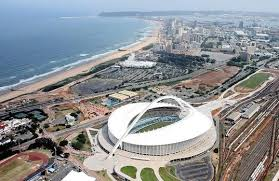

Which city:
Durban
The British colonized the Durban area in 1824. The settlement was originally called Port Natal. In 1835 the city was renamed to Durban city (named after the somewhat controversial Cape Colony governor Sir Benjamin D’Urban) Durban, otherwise known as eThekwini, is recognised as the largest city in KwaZulu-Natal and is famous for being the busiest port in South Africa. We all know Durban for the warm, subtropical weather and vast, amazing beaches, which makes it a tropical paradise for lazy, relaxing days in the sun and exciting nights filled with bright lights, music and busy streets filled with people and an energy that is exciting yet can’t quite be defined
.jpg) predecessor of the Parliament of South Africa, before the 1910 Union of South Africa,
was the bicameral Parliament of the Cape of Good Hope. This was composed of the House of Assembly
(the lower house) and the Legislative Council (the upper house).
It dated back to the beginnings of Cape independence in 1853, and was elected according to the multi-racial Cape Qualified Franchise system,
whereby suffrage qualifications were applied equally to all males, regardless of race.
The buildings of the Cape Parliament went on to house the Parliament of South Africa,
after union
predecessor of the Parliament of South Africa, before the 1910 Union of South Africa,
was the bicameral Parliament of the Cape of Good Hope. This was composed of the House of Assembly
(the lower house) and the Legislative Council (the upper house).
It dated back to the beginnings of Cape independence in 1853, and was elected according to the multi-racial Cape Qualified Franchise system,
whereby suffrage qualifications were applied equally to all males, regardless of race.
The buildings of the Cape Parliament went on to house the Parliament of South Africa,
after union
.jpg) The Castle of Good Hope (Dutch: Kasteel de Goede Hoop; Afrikaans: Kasteel die Goeie Hoop)
known locally as the Castle or Cape Town Castle is a bastion fort built in the 17th century
in Cape Town, South Africa. Originally located on the coastline of Table Bay, following land reclamation the fort is now located inland.
In 1936 the Castle was declared a historical monument (now a provincial heritage site) and following restorations
in the 1980s it is considered the best preserved example of a Dutch East India Company fort.
The Castle of Good Hope (Dutch: Kasteel de Goede Hoop; Afrikaans: Kasteel die Goeie Hoop)
known locally as the Castle or Cape Town Castle is a bastion fort built in the 17th century
in Cape Town, South Africa. Originally located on the coastline of Table Bay, following land reclamation the fort is now located inland.
In 1936 the Castle was declared a historical monument (now a provincial heritage site) and following restorations
in the 1980s it is considered the best preserved example of a Dutch East India Company fort.
.jpg) District Six Museum is a museum in the former inner-city residential area,
District Six, in Cape Town, South Africa.
District Six Foundation was founded in 1989 and the museum in 1994,
as a memorial to the forced movement of 60,000 inhabitants of various races
in District Six during Apartheid in South Africa in the 1970s.
The floor of the museum is covered with a big map of the district
with hand written notes of former inhabitants, which indicate where their houses were located. One former resident is jazz musician,
Abdullah Ibrahim, better known by the name Dollar Brand. Other pieces in the museum are old traffic signs,
exhibits of historical moments and lives of families from the area, historical declarations,
and exhibits about the demolition
District Six Museum is a museum in the former inner-city residential area,
District Six, in Cape Town, South Africa.
District Six Foundation was founded in 1989 and the museum in 1994,
as a memorial to the forced movement of 60,000 inhabitants of various races
in District Six during Apartheid in South Africa in the 1970s.
The floor of the museum is covered with a big map of the district
with hand written notes of former inhabitants, which indicate where their houses were located. One former resident is jazz musician,
Abdullah Ibrahim, better known by the name Dollar Brand. Other pieces in the museum are old traffic signs,
exhibits of historical moments and lives of families from the area, historical declarations,
and exhibits about the demolition